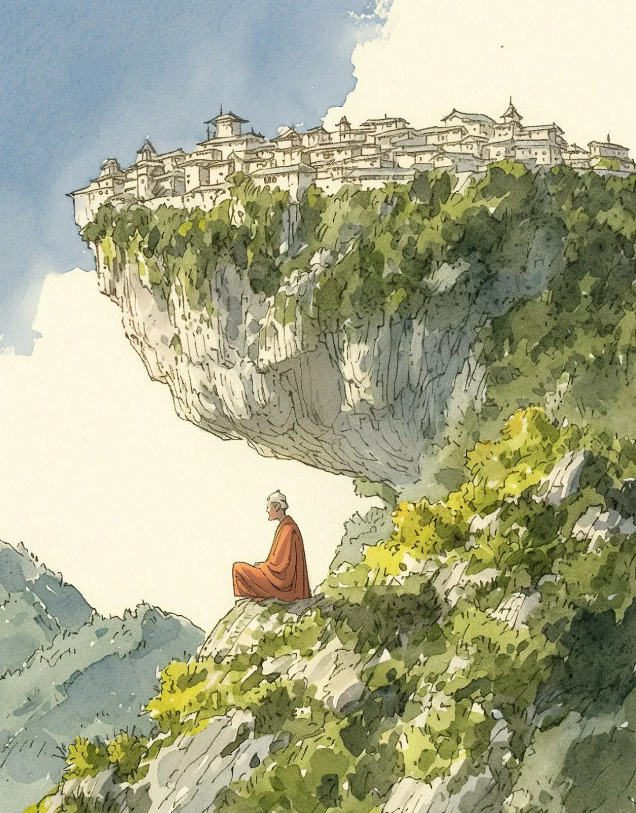

구불구불한 길을 육십칠 계단 올라가서 비틀어진 소나무에서 왼쪽으로, 이것이 그의 사색하는 장소로 가는 길이었다. 승려는 익숙한 발걸음으로 그 길을 따라갔고, 매일의 순례길에서 만나는 모든 돌과 뿌리는 이미 잘 아는 동반자였다.
[Sixty-seven steps up the winding path, then left at the twisted pine - this was the way to his thinking spot.” The monk traced the familiar route with practiced feet, each stone and root a known companion in his daily pilgrimage.]
그의 도반들은 절벽 위 사원 안의 명상당을 선호했지만, 그는 항상 이 낮은 곳에서 명료함을 찾았다. 그곳에는 노란 야생화 군락 사이에 있는 튀어나온 바위가 높은 절벽 아래에서 오랜 친구처럼 그를 기다리고 있었다.
[While his brothers preferred the meditation halls within the cliff-top compound, he had always found clarity in this lower perch, where a jutting outcrop among patches of yellow wildflowers waited for him like an old friend beneath the towering precipice.]
수도원 도시는 깎아지른 절벽 위에 상아로 된 왕관처럼 자리 잡고 있었고, 그 하얀 벽들은 아침 빛을 받아 빛났다.
[The monastery-city perched atop the sheer cliff face like a crown of ivory, its white walls catching the morning light.]
산꽃들과 바람에 휘어진 소나무들 사이의 그의 자리에서, 그는 각각의 안뜰과 경사진 지붕, 그리고 도반들이 아침 향을 피우는 각각의 창문들의 형태를 따라갈 수 있었다. 하지만 그를 매일 이곳으로 이끄는 것은 사물들 사이의 공간이었다. 거친 회색 절벽과 푸른 경사면 사이의 광활한 공허, 하늘과 땅 사이, 생각과 무념 사이의 공간이었다.
[From his seat among clusters of mountain flowers and wind-bent pines, he could trace the geometry of each courtyard, each slanted roof, each window where his brothers lit their morning incense. But it was the space between things that drew him here day after day - the vast emptiness between the harsh gray cliff and verdant slopes, between earth and sky, between thought and no-thought.]
이곳의 침묵은 피부에 닿는 비단같은 질감이 있었고, 저 위 사찰 생활의 분주함에 방해받지 않았다.
[The silence here had texture, like silk against skin, undisturbed by the bustle of temple life far above.]
계곡에서 불어오는 따뜻한 상승기류가 공기를 휘저었고, 그와 함께 예상치 못한 것이 날아왔다. 종이학 한 마리가 열기류를 타고 나선을 그리며 지나가다가 그의 옆에 내려앉았는데, 그 날카로운 접힌 자국은 여전히 선명하고 의도적이었다. 그 안에는 정성스러운 필체로 쓰여 있었다: “때로는 천국을 가장 잘 보는 곳은 밖에서 안을 들여다보는 것이다.”
[A warm updraft from the valley stirred the air, and with it came something unexpected - a paper crane, riding the thermal current, spiraling past before landing beside him, its crisp folds still sharp and deliberate. Inside, in careful strokes: “Sometimes the best view of heaven is from the outside looking in.”]
그는 그 필체를 알아보았다. 절벽 가장자리에서 자신을 지켜보던 것을 본 적이 있는 새로운 주지스님이었다. 지난 봄에 도착한 그 스님은 움직이는 명상과 사찰보다는 시장에서 불성을 찾는 것에 대한 비전통적인 생각을 가지고 있었다.
[He recognized the handwriting - the new abbott, who he’d seen watching him from the cliff’s edge. The man who’d arrived last spring with unconventional ideas about meditation in motion, about finding Buddha nature in the marketplace rather than the temple.]
승려는 굳은살이 박인 손가락으로 종이의 결을 느끼며 종이를 펴보았다. 이십 년 동안, 그는 고요함 속에서, 분리됨 속에서, 그리고 위의 세상으로부터 벗어나는 이 일상적인 의식 속에서 깨달음을 추구해왔다.
[The monk smoothed the paper with calloused fingers, feeling its grain. For twenty years, he’d sought enlightenment in stillness, in separation, in this daily ritual of removal from the world above.]
하지만 두 번째 학이 같은 기류를 타고, 그 다음 세 번째 학이 아침 빛 속을 춤추듯 날아가며 각각 자신만의 메시지를 전하는 것을 보면서, 그는 마치 씨앗이 터지듯 자신의 내면에서 무언가가 열리는 것을 느꼈다.
[But as he watched a second crane catch the same current, then a third, each bearing its own message as they danced through the morning light, he felt something crack open inside him like a seed.]